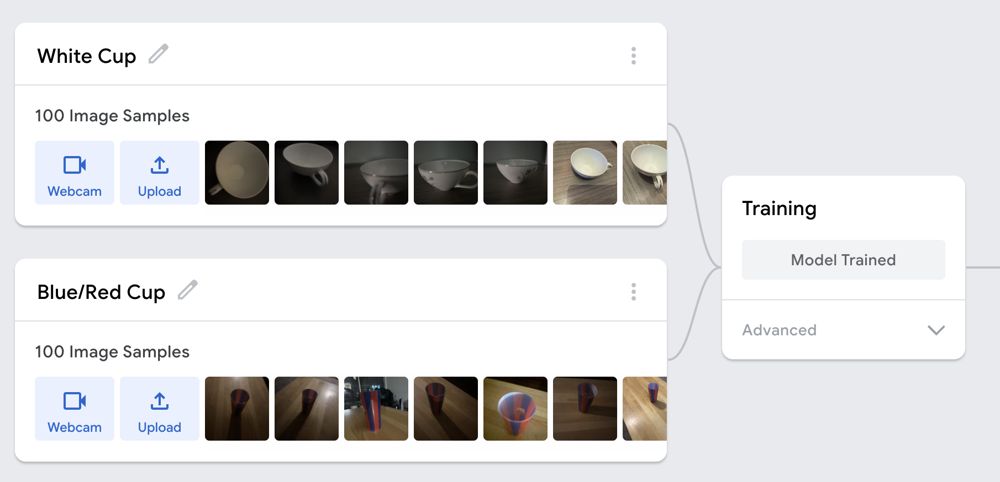

Teachable Machine Project
Project Overview
This project explores the process of training a machine learning model using Google's Teachable Machine, with the goal of understanding how AI systems recognize and classify visual data.
Our group developed an image classifier that is designed to distinguish between different categories of images, specifically different styles, shapes, and colors of cups. The purpose of this project is not only to build a functional machine learning model, but also to better understand how data influences the way algorithms learn and make decisions. By collecting and using original images, we are directly shaping the dataset that the model relies on, which allows us to observe how variations in images, such as lighting, angle, and background, impact the model's performance.
Through this process, we aim to explore both the technical and conceptual aspects of machine learning. Using Teachable Machine makes it possible to experiment with training an AI model, while still revealing the challenges behind accurate image classification and data collection. This project also encourages us to think about how artificial intelligence systems are built and how the data used to train them can affect outcomes, especially with real-world implications.

Project Scope
The scope of this project includes using Google's Teachable Machine to develop a machine learning image classifier. The project includes collecting and organizing image data, training the model, embedding it into a webpage using HTML, and testing its performance in real time through live webcam input. One of our main goals for this project was to learn more about machine learning systems and understand how they work. We were able to do this directly using our own data. Another goal that we had was that we wanted to evaluate how the variety of the data affects model accuracy. We also want to learn more how teachable machines can struggle when faced with unfamiliar inputs, and how bias in datasets can influence results. Before we started this project, some of the challenges we expected to face had to do with inconsistent predictions. The limited data allows for problems such as sensibility to the lighting and background changes. Another road block we thought we might have to anticipate for was that the model might classify some categories more accurately than others. Overall, we’re excited to work on this project because it gives us hands-on experience with building a machine learning system in a web environment that can help us once we graduate and start our careers.
Process
Our group created an original dataset to train a machine learning model. We focused on classifying different categories of cups. This included using various colors, backgrounds, angles, distances, use of lights, shapes, and sizes. Each group member collected 100 original images, resulting in a total of 200 images. This allowed us to better understand how the data we collected directly affects the model's performance, outcomes, and potential bias. This helped make the dataset more diverse, given the various images captured. After collecting the images, we organized them into 2 labeled categories.
Class 1 = White Cups
Class 2 = Blue/Red Cup
Class 3 = Navy Cup
These were then used for training, where Teachable Machine uses TenserFLow.js. Teachable Machine uses supervised learning to complete this. This model is based on data input, model training, and real-time predictions. During training, the model is able to recognize and pick up patterns seen in the samples we provided. The model is able to identify patterns within the provided samples and adjust its parameters accordingly. This showed the importance of data quality and variation in building an effective machine learning model. After training, the model is then able to predict new inputs in real time. These predictions are based on the sample data our group provided.

Project Demo Video
Test the Model
Label: Loading model...
Waiting for prediction...
Testing and results
During testing, our model was evaluated using a wide variety of inputs beyond the original dataset, including different cup colors, lighting conditions, backgrounds, camera angles, distances, and miscellaneous non-cup objects with various colors. This helped us understand how the model generalizes outside of its training data.
We found that the model heavily relied on color as its main feature for classification rather than the actual shape of the cups. Instead of recognizing structural features of a cup, it often made predictions based on whether an image appeared closer to “white”, “red/blue”, or "navy."
Lighting also played a significant role in the model's behavior. Since many white cup images in the dataset were taken in darker lighting, the model sometimes classified darker or shadowed cups as white cups. This showed that it associated lighting conditions with labels rather than actual object identity.
Backgrounds were another major influence. Because many red/blue cup images were taken in front of a brown or wooden background, the model sometimes linked that background with the red/blue class. As a result, white cups placed on similar backgrounds were occasionally misclassified.
We also observed that distance and angle affected accuracy. Cups placed closer to the camera were more likely to be correctly identified, while those further away were less accurately classified.
Overall, the testing revealed that ML models depended more on surface-level patterns (color, background, lighting, and scale) than on true object recognition. This highlights the importance of diverse and balanced training data when building machine learning models, especially those that have high real-world impact and require reliable, consistent performance across different environments and conditions.
Relation to Unmasking AI by Buolawmini
[ place holder ]
Lessons Learned
[ place holder ]